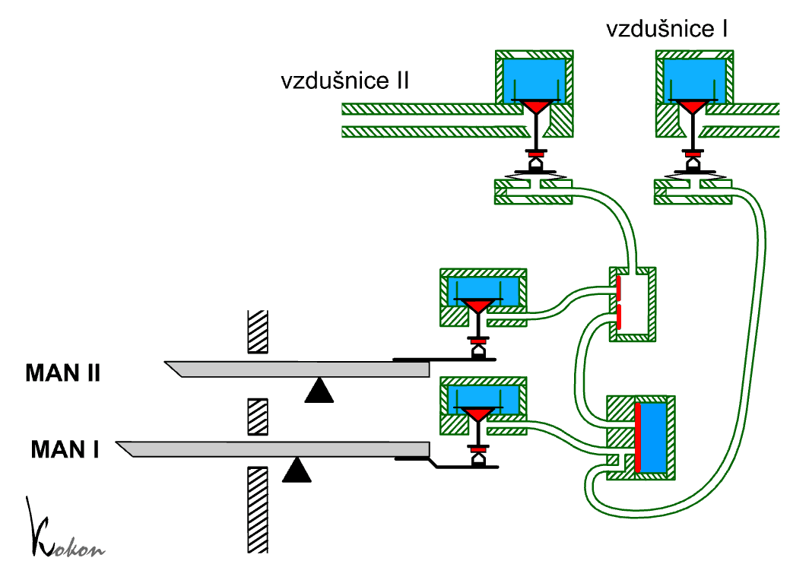
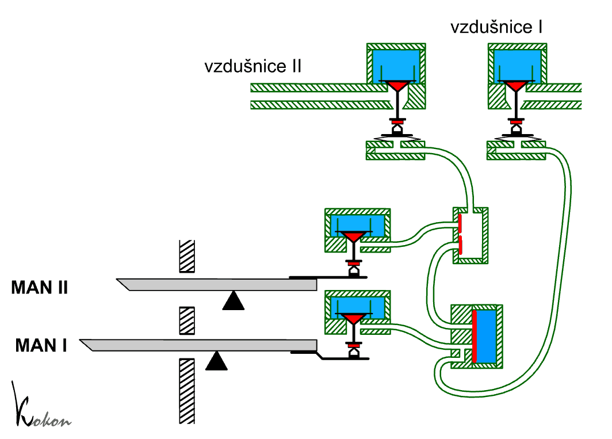
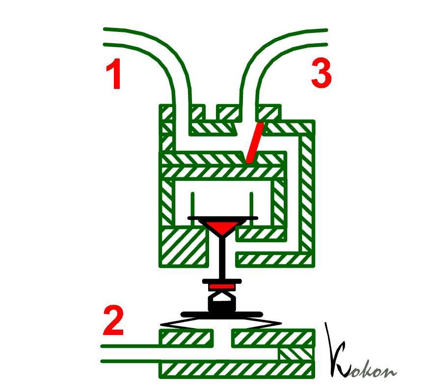
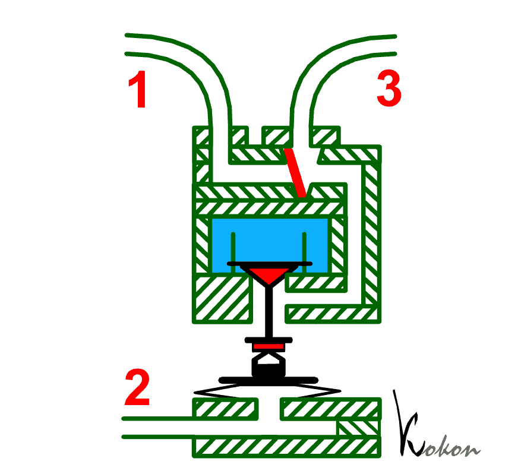
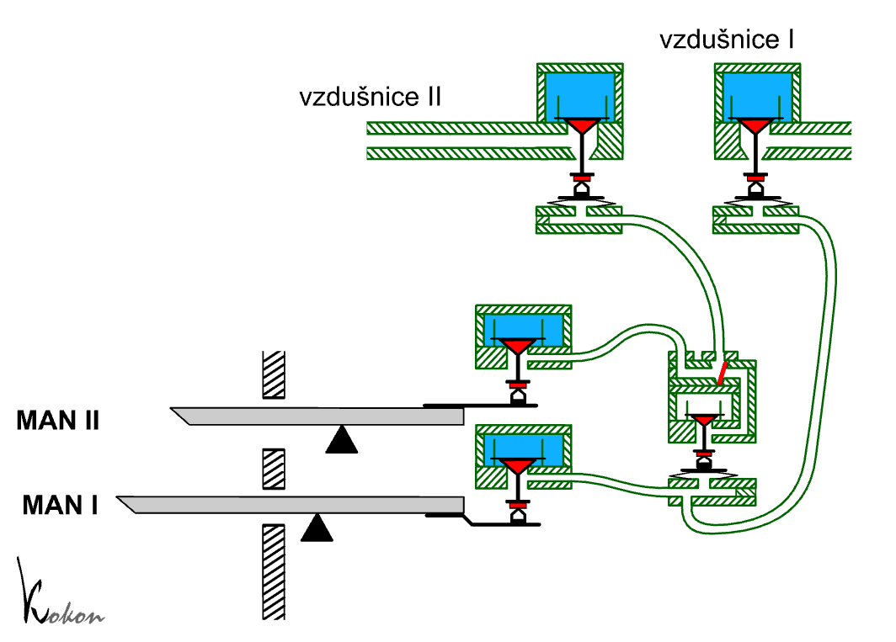
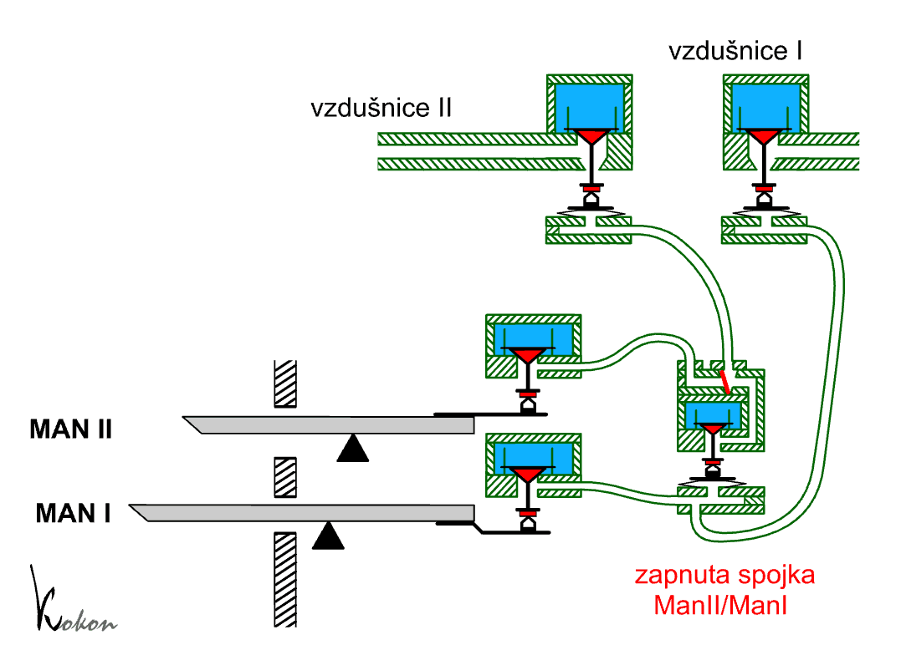

Spojky jsou zařízení, které nalezneme prakticky ve všech varhanách s pneumatickou trakturou ve větším počtu jako spojky mezi klaviaturami (II/I, I/P atd.), uvnitř klaviatur (např. I/I 4’) nebo jako transmise či extenze. Na rozdíl od mechanické traktury u pneumatiky se nevyskytuje problém ztížení hry při zapnutí více spojek (spojky fungují na pneumatickém principu a jsou vybudovány až dále v traktuře, takže nemají vliv na ovládací sílu na klávese), což vede varhanáře často k budování velkého počtu spojek i za cenu značné složitosti zařízení hracího stolu a tím i nižší spolehlivosti a častější poruchovosti (stovky kožených ventilků a klapek s velkými požadavky na přesnost výroby a výběr materiálu).
|
Součástí, odpovídající za chod spojky je membránový
ventil. Zobrazen je zde jen jeden tento ventil, je však nutno mít na paměti,
že se jedná o zjednodušený řez hracím stolem pro jeden tón, každý další
tón bude mít všechny komponenty jen pro sebe (ve skutečnosti + zařízení
pro kombinace, kolektivy atd., takže skutečný řez trakturou pro jeden
tón bude o několik řádů složitější). Všechny tóny mají membránový ventil
ve společném kanále – skříňce membránových ventilů, která probíhá po celé
délce hracího stolu. Kanál uvnitř této skříňky může být pomocí dalšího
ventilu naplněn stlačeným vzduchem, čímž lze spojku zapínat nebo vypínat. Práci souboru traktury s vypnutou spojkou ukazuje následující animace. Kanálek ve skříňce membránových ventilů spojky je naplněn stlačeným vzduchem, takže spojka manuálů II/I je vypnuta: |

Druhý manuál II ovládá pouze svou vzdušnici II přes
komůrku se zpětnými ventily. První manuál (I) ovládá současně tok vzduchu
v rourkách do dvou zařízení – do své vzdušnice I a do membránového ventilu
spojky. Směrem ke vzdušnici I vzduch proudí bez překážek, takže píšťaly
zapnutých rejstříků mohou normálně znít. Jinak vypadá tok vzduchu dalším
fragmentem traktury, souvisejícím s mechanismem spojky. Membrána ventilu
je tlakem vzduchu v komůrce nad ní přitisknuta k výstupnímu i vtokovému
otvoru do ní přivedených rourek, takže je ucpává a nedovolí vzduchu od
ventilu nad klávesou projít k rource do sběrné komůrky druhého manuálu.
Manuál I tak ovládá jen vzdušnici I, Manuál II vzdušnici II, klaviatury
nejsou spojeny. Na následující animaci je (samozřejmě zpomaleně) ukázáno, jak tentýž soubor pracuje v okamžiku zapnutí spojky: |

Zapnutí spojky v této konstrukci spočívá ve vypuštění stlačeného vzduchu
z kanálu nad membránami (dvojčinným ventilem, který je mimo vyobrazení…).
Sníží-li se tlak v kanále na úroveň tlaku atmosférického, zanikne síla,
která tiskla membrány na otvory rourek. Tím je umožněno volné proudění
vzduchu pod membránou z rourky do rourky. Funkci spojek v dvoumanuálovém nástroji s pedálem ukazuje následující interaktivní animace (po kliknutí na obrázek se otevře v novém okně). Můžete si vyzkoušet zapnout jednotlivé spojky (tlačítky) a vyzkoušet jejich vliv na hru (myší můžete stisknout klávesu či pedál): |

Jinou konstrukci, pracující na stejném principu ale
s jinými komponenty (použité ventily v hracím stole) ukazuje následující
obrázek: |

Jsou zde použity klapkové ventily (v předchozích
příkladech byly na jejich místě kuželky) a částečně jiné je i vedení rourek
a místa jejich spojení. Pod klapkou ventilu, řízeného prvním manuálem
Man I se nachází vtokové otvory dvou rourek, kterými se po stisknutí klávesy
vzduch dostane jednak přímo k relé pod první vzdušnicí (levý otvor, nejspodnější
rourka), jednak do skříňky s membránovými ventily spojky. Jsou to tedy
od počátku dvě rourky a ne jedna, která se v předchozích příkladech dělila
teprve v bločku membrány. Ve složitějších nástrojích s více spojkami,
pedálovým automatem, crescendem, kombinacemi… může být rourek pod klapkou
i více. Tento příklad názorně ukazuje, že v jednom nástroji může být využito
celé řady konstrukcí a provedení ventilů – máme zde klapky, membrány,
zpětné ventily, kuželky v různých funkcích. |
Na následujícím příkladu je popsána funkce spojky
v tlakovém (naplňovaném) systému. Spojkový element je zde tvořen na základě
modifikovaného relé se speciálně upraveným výtokovým kanálem: |
 |
K relé je možné přivést
tlakový vzduch dvěmi nezávislými řídicími cestami – (1 a 2). Z něj už
vychází pouze jeden společný kanál (3). Zřetelně je vidět, že výstupním
kanálem (3) může proudit vzduch jak od vstupní rourky (1), tak i z pravého
kanálku v relé, který je zásobován vzduchem z komůrky s ventilem. Ventil
je ovládán míškem přes rourku (2). Na začátku kanálu k rource (3) je malá
sběrná komůrka, „sčítající“ pneumatické impulsy od obou zdrojů. V ní je
zabudován zpětný ventil, zabezpečující tok vzduchu jen ve směru od zdroje
ke spotřebiči, nedovolující únik vzduchu ke druhému zdroji (a tak vzájemné
ovlivnění manuálů při vypnuté spojce). |
Funkci zařízení přibližuje
tato aniamace – vzduch, který ke spojce dorazí rourkou (1) od ventilu
nad klávesou, bez překážek pokračuje výstupní rourkou 3 směrem ke vzdušnici
(na cestě může procházet dalšími zařízeními a mezirelé, což teď není podstatné).
Každý stisk klávesy u rourky (1) tak je příčinou zapůsobení akčního členu
za rourkou (3). Jinak je tomu u druhé vstupní rourky (2). To, zda i objevení se tlaku v této rource zapůsobí na akční člen za rourkou (3) závisí na tom, je-li v komůrce relé v tuto chvíli přítomen stlačený vzduch. První animace ukazuje případ, kdy tomu tak není. I když se kuželka relé nadzvedne nadmutým míškem, který se naplní rourkou (2), na výstup (3) to nemá vliv, protože kanál v relé je prázdný a impuls od rourky (2) se dále nepřenese. |
 |
|  | Na této animaci už je relé s naplněnou komůrkou (kanálkem). To odpovídá zapnuté spojce (komůrka se naplní otevřením dalšího ventilu v hracím stole, který zde není znázorněn). Tlakový impuls se objeví na rource (3) jak v případě příchodu rourkou (1), tak i (2). V tomto okamžiku je jeden spotřebič (akční člen) na konci rourky (3) ovládán od dvou zdrojů – (1 i 2). Všimněte si na této animaci blíže i funkce zpětného ventilu v komůrce nad relé. |
Jak lze tohoto upraveného relé využít v konstrukci
pneumatické spojky? Rourky, přivádějící ke spojce vzduch vedou od kláves
jednotlivých manuálů (v tomto případě od kláves jednoho tónu ve dvou manuálech,
pamatujme, že pro každý tón potřebujeme samostatné relé, společný bude
jen vzduchový kanál pro zapnutí spojky). Na animaci je ukázáno využití
spojkového relé v konstrukci traktury dvoumanuálového nástroje (opět zjednodušeně,
je zakreslena jen spojka, chybí další pomocná zařízení – kombinace, kolektivy,
crescendo, další spojky…). Nejprve tedy situace s vypnutou spojkou: |

Jak je vidět, vzdušnice II je připojena přes výše
popsané spojkové relé. K němu jsou přivedeny dvě rourky od ventilů nad
klávesami jednotlivých manuálů. Navíc je zde ještě jedna rourka (nejspodnější
na animaci), kterou může vzduch od spodního manuálu volně pokračovat ke
vzdušnici I. Tato rourka nemá žádný vliv na vlastnosti a funkci spojky
a může se od přívodu od klávesy oddělit i v jiném místě (jiné řešení bylo
popsáno už výše, ventily u kláves mohou být klapkové a tato rourka může
vybíhat samostatně už přímo zpod ventilu). Komůrka ve spojkovém relé je prázdná, což odpovídá vypnuté spojce. Stisk klávesy kteréhokoliv manuálu způsobí dopravení vzduchu rourkami až k odpovídající vzdušnici. První manuál tak řídí vzdušnici I, druhý II. Vzduch od prvního manuálu sice způsobí nadmutí míšku a nadzdvižení kuželky ve spojce, dále se však nic nestane, neboť kuželka se pohybuje v prázdné komoře. Ta se naplní teprve po zapnutí spojky II/I: |

V tuto chvíli stisk klávesy ve druhém manuálu II funguje stejně, jako
v předchozím případě tj. uvádí do chodu relé ve vzdušnici II. Stisk
klávesy v prvním manuálu Man I však nejen sepne relé v první vzdušnici
I, ale rovněž přes spojkové relé i relé ve vzdušnici II. K hlasům v
prvním manuále tak zazní i hlasy manuálu druhého. Spojka II/I je opět
přísně jednosměrná, stisk klávesy ve druhém manuálu II nemá díky konstrukci
spojkového relé a zpětným ventilům na vzdušnici prvního manuálu vliv
ani při sepnuté spojce. Na následujících obrázcích je pohled na skutečnou spojku v hracím stole. (varhany Rieger Kloss, op. 3473 ve Smuteční síni Nového hřbitova v Třebíči, foto Michael Kročil). |
|
Řez spojkou s naznačenými nejčastějšími místy závad.
| Podívejte se rovněž na obdobnou kapitolu o spojkách v mechanické traktuře. |
Na souvisejících stránkách jsou popsány nejčastěji
používané komponenty pneumatické
traktury, tónová traktura,
rejstříková traktura
a pneumatická pomocná zařízení v kapitolách o crescendu
a kolektivech a volných kombinacích. |
Poznámka: Tato stránka je součástí Anatomie varhan ®, © Ing. Petr Bernat. Všechny animace © Konrad Zacharski